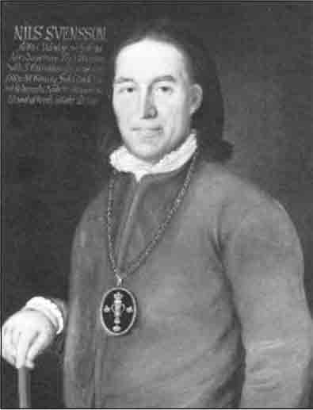
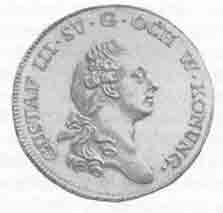
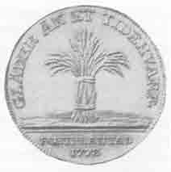
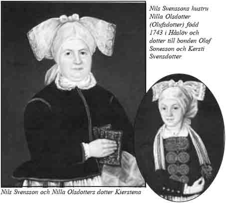
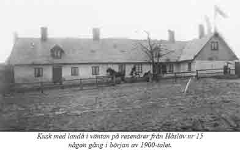
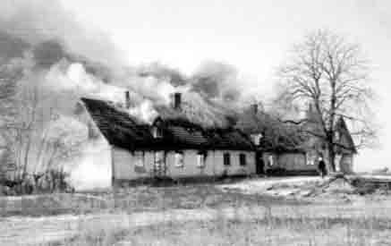
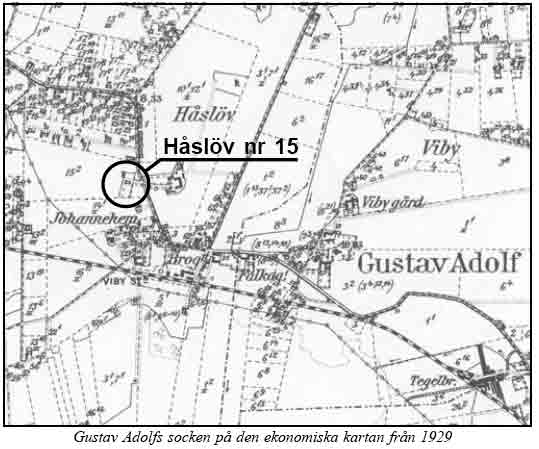

|
|||||
|
Riksdagsmannen Nils Svensson i Håslöv - villandsbonde i maktens centrum på 1700-talet Om Nils Svenssons roll vid riksdagarna under Gustav III:s tid
|
|||||
|
Frälsebondesonen Nils Svensson från Viby fick vara med i händelsernas centrum under de riksdagar i slutet av 1700-talet som skapade förutsättningar för bondeklassens politiska och ekonomiska frigörelse. Den politiska förändringen för bönderna under Gustav III:s tid inleddes med statsvälvningen eller revolutionen 1772 och fullbordades i sina grunddrag genom statskuppen och den därpå beslutade förenings- och säkerhetsakten 1789. Nils Svensson valdes för första gången som företrädare för allmogen i Villands, Gärds och Albo härader till riksdagen 1771. Han deltog därefter i samtliga riksdagar under Gustav III:s tid och dessutom vid riksdagen i Norrköping 1800 under Gustav IV Adolfs regering. Under riksdagen 1786 var Nils Svensson talman för bondeståndet. Vid den därpå följande riksdagen 1789 fick han inte förnyat förtroende som talman men kom ändå – genom en del oförutsedda händelser – att vid några viktiga tillfällen inta rollen som allmogens ledande person. 1) Vid den i all hast efter Adolf Fredriks död inkallade riksdagen som hölls under tiden juni 1771 till september 1772 var Nils Svensson mycket aktiv. Under den pågående riksdagen genomförde Gustav III sin revolution – ibland kallad statsvälvningen – som i ett slag gjorde slut på frihetstidens ständervälde. Revolutionen ägde rum den 19 augusti i Stockholm och kungens handgångne man Johan Christopher Toll hade kommit till Kristianstad redan den 21 juni för att där förbereda statsvälvningen: Den 23 augusti överlämnade fästningen sig till den nya regimen, som företräddes av J C Toll, Abraham Hellichius, sedermera adlad Gustafsschiöld, och prins Carl Vid denna tid |
 |
|
|||
|
Riksdagsmannen Nils Svensson. Foto från Svenska porträtt-arkivet efter en oljemålning av Martin david Roth som är i privat ägo. personhistorikern Carl Sjöström skriver att Nils Svensson i egenskap av talman 1789 undertecknade förenings- och säkerhetsakten varför han av konungen Gustav III erhöll en förgylld silfvervase att bäras på bröstet.
|
|||||
|
befann sig Nils Svensson i Stockholm och bondeståndets överläggningar hade varit inställda sedan den 15 augusti. Då förhandlingarna återupptogs den 26 augusti klåckan 9 förmiddagen in pleno heter det i protokollet: Talemannen (Josef Hansson från Älvsborgs län) påminte ståndet genom et ömt och lämpeligt tal den hastiga ändring uti wårt regeringzsätt, som, sedan ståndet sidsta gången skildes från detta met, sig tildragit ....... och Ständer hafwa med sin regent öfwerenskommit om en ny regeringsform, som Swerge i dess rätta och lagliga frihet befästar, återställer de lagar, som före 1680 såsom grundlagar warit ansedde, hwilka bibehålla konungen wid sin magt och Ständerne wid sin lagliga frihet. Widare trodde talemannen, at den allwisa Försynen med denna förändring welat liksom en fader låcka sina barn til enighet och sämja; hwartil han dem äfwen upmuntrade med psalmen: ”Si huru godt och ljuvligt är, at bröder kunna sämjas”.
Vid riksdagen 1771–1772 blev Nils Svensson vald att ingå i Secreta Deputationen och i Handels- och manufactur-deputationen. I augusti 1771 lämnade Nils Svensson in ett s k memorial där bondeståndet skulle göra framställning till de övriga stånden om rotepenningarnes förminskande till hälften för skånska Allmogens söner, som äro under 20 år. Han inlämnade också vid samma tid en protest mot den föreslagna indragningen av jägeribetjäningen: ... Jag känner den ort eller härad, jag bor uti och är riksdagsman före, som är nog vidsträckt slättbygd, och fins uti samma härad endast 3 a 4 socknar, som hafwa ek- och bokskog på dess ägor, och skulle densamma nu blifwa utan tilsyn, så är at befara innom 10 års tid icke blefwo nogot träd, huru skulle då en slättbygd sedan kunna bestå; och är således mitt påstående at skogzbetjeningen uti detta härad bibehålles til ek- och bokskogars wård ...... Nils Svensson gav sig också – med ett eget memorial – in i striden om det föreslagna förbudet mot all brännvinstillverkning, dock utan resultat eftersom Kungl Majt två dagar efter riksdagens avslutande utfärdade en kungörelse om förbud mot tillverkning och försäljning av svenskt brännvin.
Men det var i diskussionen om expedieringen av Gustav III:s kontroversiella konungaförsäkran som riksdagsmannen från Viby för första gången på allvar kom in i det rikspolitiska skeendet. Det har sagts att ”denna riksdag i hög grad präglades av odalmannaståndens (dvs borgerskapets och böndernas) angrepp på adelsprivilegierna i samband med förhandlingarna om den av tronskiftet föranledda konungaförsäkran”. Nils Svensson blev tidigt indragen i förspelet till augustirevolutionen 1772. I januari 1772 hade Nils Svensson erinrat bondeståndet om att mycket tahl och tvekan skal löpa folcket emellan rörande expeditionens wärkställande af Konungaförsäkran och han förmådde ståndet att förbehålla sig på det kraftigaste at icke det minsta ord eller mening uti den antagne Konungaförsäkran må rubbas, ändras eller uteslutas. Denna ojämna maktkamp mellan borgare och bönder å ena sidan och adel och en stor del av prästerskapet å andra sidan hade redan dragit ut alltför länge. Motsättningarna var på väg att dela nationen och Gustav III började se möjligheter för en statsvälvning. Nils Svensson hade i protokollet vädjat till adelns fosterlandskärlek: Jag beder för Guds och människornas skull, att vi tänka på en fattig allmoge i landet, som underhåller sina fullmäktige att försvara dess rätt; det vore högst äfventyrligt att sätta den i fråga, ty när hungersnöd är i ett land, är rådeligt att hantera varsamt med folkets i lagarne förvarade rätt. I februari skrev kungen i ett brev till modern: Idag synes det ännu säkert att man skall förelägga mig två konungaförsäkringar till undertecknande, men man är öfvertygad, att jag skall vägra min underskrift. De ofrälse stånden tyckas tillgripa denna utväg endast för att få ett slut och synas ha försökt allt för att nå sitt mål.... I början av mars hade motsättningarna nödtorftigt undanröjts genom att ridderskapet under stora inre våndor böjt sig för allmogens krav och Gustav III undertecknade sin konungaförsäkran den 4 mars 1772. Några av de hetsigaste motståndarna bland adeln ansåg: att det vore rätta sättet att undergräfva statsskicket om man rubbade eganderätt och välfångna privilegier. I arbetet Bonden i svensk historia av E Ingers beskrivs Nils Svenssons roll i rikspolitiken vid de två därefter följande riksdagarna. Riksdagen 1778 (oktober 1778– januari 1779) var den första som hölls efter Gustaf III:s statsvälvning i augusti 1772. Denna riksdag har kallats ”ett skådespel iscensatt av den kunglige regissören och hans medhjälpare”. Kungen hade efter statsvälvningen – enligt den återtagna gamla riksdagsordningen från 1617 – rätten att utse ”skrivare för allmogen” och till bondeståndets sekreterare utsåg Gustaf III kungagunstlingen Elis Schröderheim. Denne ordnade med att bondeståndet bad kungen att utse ståndets talman. Kungen valde vid detta tillfälle en skåning, Anders Mattsson från V. Skrävlinge. Han var den förste skåning som betroddes en sådan värdighet. Befolkningen i den från Danmark erövrade provinsen hade behövt 120 år för att ”bevisa” sin trohet mot den nya överheten.
Bönderna gick under denna riksdag kungen till mötes och vid riksdagens avslutande vände Gustaf III sig särskilt till bönderna med ett tack för deras trohet och välförhållande. Under den tid riksdagen pågick hade dessutom landet begåvats med en tronföljare. Kronprinsen, den sedermera avsatte Gustav IV Adolf, föddes den 1 november och bland hans tio faddrar ur bondeståndet återfinns Nils Svensson från Viby. Till var och en av faddrarna utdelades vid dopet en minnespeng i guld att bäras i svarta och gula band i knapphålet. På minnespengens frånsida står: ”Gläder än et tidehvarf. Fortplantad 1778.” Bland andra insatser från Nils Svensson under denna riksdag kan nämnas att han i januari 1779 – några dagar före avslutningen – ledde bondeståndets deputation till de övriga stånden i religionsfrihetsfrågan. Den därpå följande riksdagen 1786 blev enligt historikerna en vändpunkt för Gustaf III. ”Han, som ville vara och trodde sig vara en älskad landsfader, såg sig plötsligt stå inför en riksdag, som mötte nästan alla hans förslag med motstånd och misstro, visserligen insvept i undersåtligt hövligt hölje men ändå tillräckligt stingande.” Under denna riksdag skakades kungens politiska ställning i sina grundvalar. Gustav III blev besviken på den ändrade hållningen inom bondeståndet och han hade nog räknat med att den lojale talmannen Nils Svensson från Viby skulle leda bondeståndet i önskad riktning. Inte heller den av kungen utsedde sekreteraren i bondeståndet Carl Lagerbringklarade av att styra utvecklingen åt ”rätt” håll. (Denne blev sedermera lantmarskalk vid riksdagen i Örebro 1812, dvs talman för ridderskapet, samt statsråd och en av rikets herrar.) Om Nils Svenssons roll vid riksdagen 1786 (maj – juli) skriver Ingers: Till talman i bondeståndet utsåg konungen (det sägs på Tolls förslag) Nils Svensson från Håslöv i Gustav Adolfs socken, Kristianstads län. Denne hade vid riksdagen 1778 varit medlem i fadderdeputationen vid kronprinsens dop, och i undersåtlig beskäftighet hade han sedan ansökt om och lyckats utverka att namnet på hans hemsocken Viby ändrades till likhet med tronföljarens. 2) Nils Svenssons kungatrohet var grundfast, men det visade sig snart att han icke var mannen att leda ståndet efter sin höge uppdragsgivares avsikter. Den verklige ledaren för bondeståndet under riksdagens lopp blev dock Jon Bengtsson från Skatelövs socken i Kronobergs län. Nils Svensson fick inte förnyat förtroende att vara talman vid den epokgörande riksdagen 1789. Talmanskapet i bondeståndet blev en av de första knäckfrågorna. Jon Bengtsson fick avspisas med en del rundliga förmåner och Nils Svensson vädjade om att få uppdraget med hänvisning till att han hade gjort goda insatser vid förra riksdagen och att han hade behandlats med otacksamhet. Bl a påstod han att ett löfte om en silverkanna inte infriats.Kungens förtrogne, biskopen Olof Wallquist i Växjö, ordnade så att Nils Svensson fick silverkannan. Wallquist menade att Nils Svensson var lika farlig att ha som talman, som han var att förbigå: ”Otvivelaktigt slug, lycklig talare, dristig i sina steg men högfärdig och egennyttig, osäker att räkna med och likväl farlig att hafva emot sig.” Ingers skriver: Det sades att Nils Svensson erbjöds fullt talmansarvode, om han ville avstå från äran men likväl stödja konungen i riksdagen. ”Han mottog offerten, och mera bevis behöver man ej för att stadga ett skäligt omdöme om den mannens tänkesätt”, det var Wallquists slutbetyg över Nils Svensson.
3) Till talman vid riksdagen 1789 (januari – april) utsågs östgöten Olof Olofsson från Borgs socken vid Norrköping och som sekreterare utsågs ”den drivne intrigören” och advokatfiskalen Per Zacharias Ahlman. Detta betydde emellertid inte att Nils Svensson kom att förhålla sig overksam under denna betydelsefulla riksdag. Talmannen Olof Olofsson insjuknade den 10 mars och dog under den pågående riksdagen.
4)Brytningen mellan kungen och ridderskapet kom i öppen dager vid en sammankomst i rikssalen den 17 februari. Kungen gick till våldsamt angrepp mot adelsmännen och bad ståndets riksdagsmän att ”förfoga sig till sitt hus”. Sedan adelsmännen avtågat till riddarhuset höll kungen ett tal till de kvarvarande tre stånden som inleddes: ”I hafven hört, vördige (prästerna), förståndige (borgarna), redige (bönderna) Svenske män, hwad jag varit tvungen att säga adeln ....”. Han berömde de ofrälse stånden för deras ordning, laglydighet och enighet. Sammanträdet avslutades av Nils Svensson med: Bondeståndet nu önskar Kungl. Maj:t den högstes nåd i det allmänna utropet: Gud bevare konungen! Vid ett av de mest turbulenta ögonblicken under riksdagen blev Nils Svensson bemyndigad av bondeståndet att hålla ett tal som i det närmaste uppmanade kungen att göra en statskupp. Han skall ha sagt att kungen under en period av t ex sex månader borde ”antaga så stor makt och myndighet, som konungen fann rikets frälsning verkligen fordra”. Ingers skriver att Nils Svensson läste talet lågmält från ett papper, som sedan genast togs ifrån honom. Innehållet var så ”hett” att en helt annan version blev införd i protokollet. Resultatet blev dock att den s k förenings- och säkerhetsakten antogs av riksdagen trots adelns motstånd. Biskopen Wallquist menade att: böndernas ja var så våldsamt att borgares och prästers utlåtande föga märktes. Det blev också genom ödets skickelse Nils Svensson som fick underteckna den epokgörande ”akten” för bondeståndets räkning. I det biografiska verket Sveriges män och kvinnor står: Vid riksdagen 1789 utsågs han (dvs Nils Svensson) av konungen under talmannens sjukdom till dennes ställföreträdare och kom därigenom att underteckna föreningsoch säkerhetsakten; förfarandet stod i strid med traditionellt bruk enligt vilket vid dylika fall representanten för Håbo härad i Uppland skulle vikariera. Genom statsvälvningen 1789 blev kungen i det närmaste enväldig och avvecklingen av det gamla privilegiesamhället inleddes. Något egentligt privilegiebrev för bondeklassen blev dock inte utfärdat. De tilltänkta bondeprivilegierna” blev i stället införda i tre olika författningar: Förenings och säkerhetsakten av den 21 februari och 3 april 1789, Förordningen angående kronohemmans försäljning till skatte samt de förmåner och villkor, hvarunder skattehemman hädanefter skola innehafvas och Kungl. Maj:ts försäkran och stadfästelse å svenska och finska allmogens rättigheter av 4 april 1789. Omdömena om kungens agerande vid riksdagen 1789 är hårda. I en biografi över Gustav III sägs: .... han hade nått sina mål med förkastliga medel, inte bara rena olagligheter utan också andra oegentligheter, påtryckningar, intriger, undanröjande av sanningen, och han hade personligen påverkat och ingripit i riksdagens arbete på ett sätt som var klart inkonstitutionellt. Den 20 februari, dagen innan kungen bad de samlade ständerna att anta förenings- och säkerhetsakten, hade ett tjugotal oppositionella adelsmän blivit häktade eller satta i husarrest. I Hedvig Elisabeth Charlottas kända dagbok förutskickas angreppet på adelsmännen. Hon skrev i januari: De adelsmän, som hitkommit för riksdagen, äro i allmänhet väl beväpnade med både sablar och pistoler samt tyckas beredda att hellre duka under än underkasta sig slafveri ...
Det finns en formulering i Nils Svensson riksdagsmannafullmakt, utfärdad av häradshövding Jöns Witte, som efter statskuppens genomförande kommer i en helt ny belysning. 5) (Se även bilaga A.) Där står att Nils Svensson skall ställa sig: .... Sweriges Rikes Lag och 1772 års beswurne Regerings Form till skÿldig efterlefnad och rättelse, särdeles att han icke inlåter sig üti något hemligit eller üppenbarligit rådslag, till ändring üti dett förrberörde år fastställte Regeringssätt...
Uttalanden om Nils Svensson i hovskvallret och i drottningens dagbok Efter avsättningen av Gustaf IV Adolf blev en av den gustavianska tidens främsta iakttagare Sveriges drottning. Det var Hedvig Elisabeth Charlotta, maka till Gustav III:s bror hertig Karl, som genom ödets nyck fick denna upphöjelse. Det sägs att hon på grund av ett olyckligt äktenskap – med sin kusin – blev en framträdande observatör av sin samtid. Dagboksanteckningarna från tiden 1775-1817 är en viktig källa till kunskap om denna period. Anteckningarna, som är gjorda på franska i brevform och riktade till hennes väninna Sophie Piper, har översatts och utgivits av Carl Carlsson Bonde. (Nils Svensson har också porträtterats i Biographiskt lexicon öfver namnkunnige svenska män, Sextonde bandet med ugivningsår1849. Se bilaga B.) Nils Svenssons framträdande vid de två riksdagarna 1786 och 1789 finns omnämnt i dagboksanteckningarna enligt följande: Maj månad 1786. Jag har lyckats förskaffa mig ganska noggranna underrättelser om allt som sammanhänger med riksdagen, och hoppas därför, min kära vän, att ni må vara övertygad om sanningsenligheten av allt som jag anför, och betraktar varje tvivel som en förolämpning. ..... För bondeståndet som likaledes (dvs som borgarståndet) anhållit, att kungen skulle utse talman, utnämndes därtill en skånsk bonde vid namn Nils Svensson, som lär vara rätt begåvad och hava mera kunskaper, än vanligt folk av hans klass plägar äga, men det är ej egentligen talmannen, som leder detta stånd, utan den av kungen tillsatte sekreteraren, vilket uppdrag nu lämnades åt en sekreterare i rikskansliet, Lagerbring.
Den stora sammandrabbningen mellan kungen och bönderna uppkom i frågan om införandet av den s k passevolansen, som adeln var emot, men de två övriga stånden var för. 6) Hedvig Elisabeth Charlotta skriver vidare: Avgörandet var således beroende på bönderna, av vilka de flesta ville sluta sig till adelns beslut, men som deras talman (dvs Nils Svensson) av kungen blivit betald för att genomdriva förslaget, drog han ut på frågan, under tiden ankom en deputation från borgarståndet för att underrätta om att detta stånd godkänt kungens proposition; bönderna voro emellertid ståndaktiga och ville på inga villkor lämna sitt bifall samt blevo ursinniga över att man sökte avtvinga dem detsamma. De uttalade en önskan att frågan skulle hänskjutas till deras hemmavarande ståndsbröder. ..... De voro ståndaktiga och ville låta sig föras i ledband av sekreteraren, och alla försök att vinna dem visade sig fruktlösa; det är ej omöjligt att motpartiet även låtit utdela lika mycket penningar som kungen, ty flera medlemmar av ridderskapet gjorde allt vad de kunde för att uppegga bönderna till motstånd, men man måste även erkänna att våra bönder i allmänhet hava ett ganska redigt begrepp. Efter en lång överläggning skred man slutligen till votering, som utföll med 21 ja mot 133 nej. Under det voteringen pågick lära sinnena hava varit så upphetsade att de för att offentligt giva till känna att de aldrig skulle komma att lämna sitt bifall kastade ut jasedlar genom fönstret. Kungen försöker dölja sin harm och visa sig belåten, men han lär ha yttrat att om han kunnat ana att sinnena vore så förbittrade hade han aldrig sammankallat riksdagen..... Den allmänna förbittringen mot kungen var så stor, att många, som under riksdagens lopp hitkommo från landsorten, när de skulle votera, endast frågade efter huruvida kungen var för eller emot och genast utan att taga reda på vad saken gällde röstade emot honom. Februari månad 1789. .... Efter uppläsandet af föreningsakten tillfrågade kungen ständerna, om de ville godkänna densamma. Bönderna, hvilkas röster voro köpta, svarade genast ”ja”, likaså några utaf borgarståndet, prästerna tego, och, ehuru visserligen en och annan inom ridderskapet blifvit utaf kungen förledd att ropa ”ja”, hördes för öfrigt tydligt från detta stånd oförskräckta nejrop. Mars månad 1789. ....Efter arresteringarnas verkställande lägger kungen ej längre band på sin våldsamhet och låter sig uteslutande ledas af högfärd och egennytta utan tanke på sitt folks bästa eller ordningens upprätthållande. Det tycks vara fullkomligt slut på all frihet, och allt tyder på den fullständigaste despotism. .... Mycket missnöje väckte det inom bondeståndet, att kungen under talmannens sjukdom förordnade en bonde från Skåne (dvs Nils Svensson), som varit talman vid 1786 års riksdag, att föra ordet vid plena, något som annars enligt gängse bruk skall tillkomma en bonde från Uppland, men efter en för klaring från sekreteraren, att en hvar, som motsatte sig kungens vilja, skulle betraktas såsom brottslig, måste man lugna sig. När sedan talmannen afled, utnämnde kungen en bonde från Österbotten vid namn Anders Andersson, en synnerligen enfaldig man med dåligt anseende ... Bland andra lögnaktiga rykten, som utspredos, hufvudsakligen i afsikt att skada ridderskapets och adelns anseende, var äfven, att den aflidne talmannen blifvit förgiftad, men detta fullkomligt falska och kränkande rykte dog emellertid snart bort. Kungliga teatern var länge en förbjuden plats för de ofrälse. Den förste bonde som lär ha satt sin fot på Svenska Operan är Nils Svensson från Håslöv. I Biografiskt lexicon (del 7 sid 278) sägs: Den förste bonde Konungen uppförde på theatern var Skåningen Nils Svensson, en docka i Tolls hand, som blef talman vid 1786 års riksdag. Där sägs också följande om Johan Christopher Tolls och Nils Svenssons misslyckande att leda 1786 års riksdag i Gustaf III:s smak: Men hvad man kan säga med visshet är, att oppositionen ej hade orätt då den kallade Talmannen i Bondeståndet vid 1786 års riksdag, Nils Svensson, för ”Tolls agent”. Denne bonde var från Skåne, och hade sin hemvist ej långt från Beckaskog. Det är otvifvelaktigt att Toll ledt Konungens val på honom, och att han genom honom trott sig kunna styra Bondeståndet. Nils Svensson fortfor ända till sin död, som ej inträffade förrän ett stycke in på 1800-talet, att stå i nära förhållande till Toll. Även vid riksdagen i Norrköping 1800 blev Nils Svensson budbärare när J C Toll hade förmått bönderna att överge ett redan fattat beslut. Bönderna hade i opposition mot de tre övriga stånden inte gått med på att en avgift fick tas ut för ”hemmavarande söner och drängar”. Gustav IV Adolf lär först ha övervägt att bruka våld mot bönderna. I stället skickade kungen Toll till bondeståndet för att förmå ledamöterna att ändra sig. Den förslagne Toll rörde ledamöterna till tårar med sin ”talegåva”. Sedan ståndet frånträtt ”sitt dagen förut fattade beslut” skickades Nils Svensson genast med en deputation över till de andra stånden för att underrätta dem om beslutet. Nils Svensson, som gärna deltog i det glansfulla livet i huvudstaden, utsattes på sin tid för en hel del spefullt skvaller och som handgången man till Gustaf III och J C Toll var han illa sedd i vissa politiska kretsar. Axel von Fersen lär ha sagt att Nils Svensson var ”en genomdriven bov och hästtjuv” och enligt ett annat uttalande från motståndarsidan var han ”en utmärkt spitzbof” (med spetsbov menas närmast en extra slug bov, att jämföras med uttrycket spetsfundig). Nils Svensson var också den förste bonden som tilläts vara med i glansen vid hovets ”Assemblées dansantes”. Då denne ”Skåningabonde” i januari 1780 deltog i en s k Söndagsassemblé på Börsen tillsammans med kungen och högadeln skrev Ehrensvärd syrligt: ”Han hade vid sista riksdagen varit en belefvad och gifvande riksdagsman. Jag såg att han fick acceuil (=blev godtagen på balen) och återhöll derföre min tilltänkta fråga, om han skulle skjutsa någon af de dansande.” |
|||||
|

 Minnespeng, så kallad jetong, i guld som utdelades till faddrarna ur bondeståndet vid kronprinsens dop |
|||||
|
Nils Svenssons familj och efterkommande Nils Svensson var född 1741 som son till frälseåbon Sven Mickelsson och Elna Larsdotter i Viby. Genom gifte 1762 – med Nilla Olsdotter (Olufsdotter) född 1743 i Håslöv och dotter till bonden Olof Sonesson och Kersti Svensdotter – blev han självständig hemmansägare (på nr 15) i Håslöv. Samma år blev han utsedd till nämndeman i Villands härad. Nils Svensson dog i Gustaf Adolfs församling den 3 oktober 1815 och hustrun Nilla dog 1811. Det enda barnet i familjen, dottern Kierstena (Kerstin eller Christina), född 1779, blev gift med ekonomidirektören Jakob Petersson som var förvaltare hos Eric Ruuth på Marsvinsholm. Ruuth blev Gustav III:s finansminister och var på sin tid tillsammans med J C Toll en av Skånes mäktigaste män. Jakob Petersson hade tidigare varit inspektor på Karsholms slott som från 1792 också ägdes av Eric Ruuth.
|
 |
||||
|
7) Makarna på Marsvinsholm fick fem barn: Carolina, Charlotta, Nils, Sven och Pehr. Ekonomidirektören Jakob Petersson dog 1823. Carolina ingick äktenskap med löjtnanten, sedemera överstelöjtnanten, J Lindahl. Dottern Charlotta som var född 1800, blev gift 1818 – i Oppmanna - med prästsonen Jöns Gabriel Stevenius. Han blev student i Lund 1804 men gick sedan in på den militära banan. Han tjänstgjorde vid Gotlands nationalbeväring – det enda regemente som stod öppet för ofrälse mäns söner – och avancerade till major. Efter avskedet 1832 fick Stevenius och hans hustru gården nr 17 i Oppmanna (sedermera Rosentorp). Jöns Gabriel Stevenius dog, i Stockholm, 1865 och hans hustru Charlotta dog i Slite på Gotland 1859. Båda ligger begravda i familjegravstället vid Gustav Adolfs kyrka. Äldste sonen Nils, som var född i Balkåkra socken den 19 oktober 1801, blev magister i Lund 1820. Han sägs ha blivit sinnesrubbad och kom sedermera att vistas hos sin syster på Gotland där han avled 1843. Sonen Sven hade av allt att döma inte fullständiga förståndsgåvor och hade ställts under förmyndare. Yngste sonen Pehr, som var född 1802, lär ha studerat geologi i Lund med viss framgång. Först blev han tjänsteman i bergskollegiet, men övergick snart till företagande och drev bl a en mekanisk verkstad, tändstickstillverkning, sodavattensfabrikation och slutligen från 1865 boktryckeri. Han bytte sedermera till efternamnet Elde och var gift med Betty Nobel, dotter till kirurgen Emanuel Nobel i Gävle. (Sannolikt ej nära släkt med den berömda Nobelfamiljen, som visserligen också kom från Gävle). Pehr Elde, som ägde högt värderade fastigheter, dog i Stockholm 1874 och hustrun dog året därpå. Makarna hade sonen Per Isidor Elde, fabrikant i Stockholm, och de tre döttrarna Carolina Amalia, Hilda Gunilla och Christina.
 Förre riksdagmannen och häradsdomaren Nils Svensson dog - som redan sagts - i oktober 1815 och bouppteckningen blev fastställd av Villands häradsrätt den 21 december samma år. 8) Eftersom det vid denna tid saknades ett bankväsende av modernt slag skedde kreditgivningen huvudsakligen i form utväxlade reverser. Frågan om att tillskapa sparbanker i Sverige kom upp till behandling för första gången vid riksdagen 1817 och den första egentliga sparbanken inrättades i Göteborg 1819. År 1826 grundades i Kristianstad Sparbanken för Christianstads län. Nils Svensson hade skaffat sig en betydande förmögenhet och hade vid sin bortgång ett tiotal utestående fordringar mot skuldsedlar. 9) Fordringarna omfattade sammanlagt uppemot 2000 Riksdaler Banco. Detta belopp motsvarar två tredjedelar av värdet på hemmanet Håslöv nr 15 (2/3 mantal). Det sammanlagda värdet av Nils Svenssons jordbruksfastigheter anges i bouppteckningen till 7 777 RiksdalerBanco. Han var även ägare till öarna utanför kustremsan mellan Landön och Tosteberga, de s k Ängholmarna.
10) Bland övriga förtecknade tillhörigheter kan nämnas 120 lod (ca 1 600 gram) silver till ett sammanlagt värde av 50 riksdaler. Till samma värde upptogs ”Brännevins Redskap af panna, Bröst, Hatt och Pipor”. En större ”salpetersjuderipanna” av koppar värderades till 40 riksdaler. De två enskilt största posterna bland lösören var ”En gammal Björnskinns Päls” och ”10 st Lärfts Skjortor” som värderades till vardera 20 Riksdaler Banco. Gårdens djurbestånd förtecknades också och upptogs enligt följande: 16 hästar (en hingst, en vallack, 10 ston och 4 föl), 49 fäkreatur (en tjur, två arbetsoxar, 10 kor, 10 kvigor, 8 stutar och 18 kalvar), 10 får (en bagge och 9 tackor), 22 svin (8 galtar, 8 suggor och 6 grisar). Dessutom hade gården sex bikupor. Gårdens lager av spannmål utgjordes av 50 tunnor råg, 60 tunnor korn, 20 tunnor ärtor, 30 tunnor vicker, 30 tunnor havre och 20 tunnor blandsäd sammanlagt värderat till drygt 1 126 Riksdaler Banco. 11) Bland övriga inventarier i gården kan nämnas ett väggur värderat till 15 riksdaler, två vävstolar, fyra gamla skåp, två målade bord, tre omålade brädsoffor och två dussin stolar. 1) Nils Svensson deltog i följande fem riksdagar: 13 juni 1771– 9 sptember 1772, 19 oktober 1778 – 26 januari 1779, 1 maj – 23 juni 1786, 26 januari – 28 april 1789 och 10 mars – 15 juni 1800.
2) ”Under gustavianska tiden och även senare var det icke ovanligt, att nyinrättade församlingar fingo namn efter kungahusets medlemmar: Man erinrar sig kanske lappmarkssocknarna Fredrika Dorotea och Vilhelmina, som alla tre äro uppnämnda efter Gustav IV Adolfs drottning. Men att en socken ändrar sitt uråldriga namn som i fallet Viby kan knappast betecknas som annat än underdånigt fjäsk”.
3) Att löftet om fullt talmansarvode tycks ha infriats framgår av en notering i de gustavianska pappren i Uppsala. Till Nils Svensson och Olof Olofsson utbetalade friherre Eric Ruuth samma belopp, nämligen 666 riksdaler och 32 skilling.
4) Nils Svensson var utsedd som deputerad för Kristianstads län och han hade i denna egenskap till uppgift att ta emot och granska de motioner som medlemmarna av bondeståndet ville inlämna när ståndet inte var samlat till plenum.
5) Häradshövdingen och sedermera lagmannen Jöns Witte var född i Kristianstad den 29 oktober 1720. Han var son till den tyskbördige handlanden Johan Petter Witte och hans hustru Catharina Broome. Witte blev häradshövding för Villands, Gärds och Albo härader 1762. Han ”residerade” på Gyetorps gård i (Trolle-) Ljungby socken och dog där den 21 januari 1791. Jöns Wittes bror Daniel (1717 – 1774) blev handlande i Kristianstad och halvbrodern den värlsberömde orientalisten Jonas Otter (1717 – 1749) blev professor i arabiska i Paris och ledamot av franska vetenskapsakademin.
6) ”Passevolansen” var ett militärt ackordssystem med innebörden att staten mot viss penningersättning överlät anskaffning av beklädnadsutrustning åt manskapet självt eller åt regementschefen. Systemet började införas 1791 i form av en ”slitningsersättning” som utbetalades kontant till soldaterna. Hela passevolanssystemet hade avvecklats omkring 1870.
7) Nils Svensson och hans hustru Nilla Olufsdotter och dottern Kierstena finns avporträtterade i tre oljemålningar utförda av Martin David Roth Målningarna lär vara i privat ägo, men finns fotograferade i Svenska porträttarkivet. 8) Bouppteckningen som inlämnades till Willands härads tingsrätt den 28 mars 1816 har följande inledning: År 1815, den 21 december. Inställde sig undertecknade Härads-Skrivare och Nämndemän, för att, efter vederbörlig anmodan, förrätta Laga Bouppteckning efter Riksdags Talemannen och Härads Domaren Nils Svensson, som genom döden aflidit den 3. october innevarande år. Han var Enkling och har efterlämnat en Bröstafvinge, neml. Dottren Kjerstina, som är Gift med herr Economie Directeuren Jacob Petersson. Bemälde Directeur och Dess fru Kjerstina hafva varit tillstädes vid Dödsfallet och äro nu vid denna förrättning närvarande..... 9) Följande personer häftade i skuld till Nils Svensson: Majoren Herr Carl Ehrenborg på Hammar, Herr Comissarien och Krono Ländsmannen Santesson uti Oppmanna, Kyrkoherden Herr Joh. Lindstedt i Östra Herrestad, Herr Härads Skrifvaren Eric G. Holmer, Bonden Anders Nilsson uti Yngsiö, Frälse Hemman Åboen Nils Andersson i Kjelkestad, Herr Lands Fiscalen Thomée, Bonden Nils Håkansson uti Fjelkinge och Smeden Lars Pålsson i Wiby.
10) Följande fastigheter ägdes av Nils Svensson: Skatterusthållshemmanet Nr 15 ¾ mantal Håslöv, Utsockne frälsehemmanet Nr 17 ¼ mantal Håslöv, Skatte utjorden Nr 18 Håslöv, Skatterusthållshemmanet Nr 7 ¼ mantal Rinkaby, Utsockne frälse tullkvarnen Nr 3 Torsebro, Utsockne frälse hemmansdelen Nr 9 1/24 mantal Torseke och de ”utföre Tåsteberga belägne Holmar och Skjär, neml. Brödje- Kalfve- och Saltholmarne samt därtill hörande Trueds- och Egge Skjär, Enhyllerne, Mörkö, Leÿreholm och Brede kläpp”. 11) En tunna motsvarade vid denna tid 146,6 liter för s k torra varor.
Källor/litteratur: Biographiskt lexicon öfver namnkunnige svenske män.. Ingers, E.: Bonden i svensk historia. Kring Helgeå 1972. Årsskrift för Föreningen Gamla Christianstad, S:a Annas Gille och Villands härads hembygdsförening. Landahl, Sten (utg.) Bondeståndets riksdagsprotokoll 1771-1772. Landahl, Sten (utg.) Bondeståndets riksdagsprotokoll 1778-1779. Landin, G.: Sverges bönder. Historiska berättelser från alla tidevarv. Landsarkivet (LLA), Lund. Odhner, C. T.: Sveriges politiska historia under konung Gustaf III:s regering. Riksarkivet (RA), Stockholm. Sjöström, C.: Blekingska nationen 1697-1900. Biografiska och genealogiska anteckningar. Uppgifter från föreningen ”Viby i gamla tider” hämtade från hemsidan http://www.vibyigamlatider.se Bilaga A. Wid den allmänna Riksdag, som kommer att hållas utj Recidence staden Stockholm den Tiugosiette /:26:/ üti innewarande Januarii månad, blifwer efter föregångit ordenteligt Wahl üti Nöbbelöf, Talemannen wid förra Riksdagen Nämdemannen och Rusthållaren Nills Swensson i Hålsöf af Willands härad på Krono och Skatte allmogens, üti förrberörde samt Gierds och Albo härader wägnar härmed befüllmäktigad, att sluta och afhandla de där förekommande ärender och därwid noga att därpå gifwa att alt dett, som länder till befordran af güds namns ähra och wår wedertagna rena och sanna Religionsöfning, Rikets allmänna bästa och sanfärdiga nÿtta, bibehållande af Ständernes wälfångne Priwilegier och Rättigheter, må efter ÿttersta förstånd redeligen styrkt och befrämjat warda; ställandes sig Sweriges Rikes Lag och 1772 års beswurne Regerings Form till skÿldig efterlefnad och rättelse, särdeles att han icke inlåter sig üti något hemligit eller üppenbarligit rådslag, till ändring üti dett förrberörde år fastställte Regerings-sätt; mindre sig till något emot samma Regeringsskridande slut begifwer, efter som alt sådant ändå ogillt och kraftlöst, nu och i framtiden wara skall. – För öfrigt skall Nils Swensson, sig ombeflita, att till ett rättwist slut befordra de angelägenheter som honom i sÿnnerhet på förenemda häraders Krono och Skatte allmoges wägnar anförtrodda blifwa.– Nöbbelöf den 3 Januari 1789 På Willands, Giärds och Albo häraders Krono och Skatte allmoges wägnar. J Witte Bilaga B Utdrag ur Biographiskt lexicon öfver namnkunnige svenska män, Sextonde bandet (1849): Nils Svensson, Riksdagsman för Willand, Gärds och Albo härader i Christianstads län 1778, Talman 1786, men ej anförtrodd detta kall 1788, då Säkerhetsacten skulle genomdrifvas, ehuru riksdagsman och likväl bibehållen i allmogens förtroende ännu vid 1800 års riksdag, synes varit en man, som förtjenar närmare bekantskap. Som Talman hade han Carl Lagerbring vid sidan såsom Sekreterare, hvilken då ännu underskref Riksdagsbeslutet jemte Talmannen och Nils lärde mycket af en sådan kamrat. Att mannen hade snille, behöfver ej betviflas, då han var utvald såsom ”Tolls vän” och af Gustaf III vald till Talman, när ännu ingen intrig behöfdes. År 1780 kom denne ”Skåningebonde” till Stockholm, då d.13 Jan. på ”Söndagsassembleen” på Börsen man såg denne bonde så väl som Kungen. ”Han hade, skriver Ehrensvärd, vid sista riksdagen varit en belefvad och gifvande riksdagsman. Jag såg att han fick accueil och återhöll derföre min tilltänkta fråga, om han skulle skjutsa någon af de dansande.” E. ansåg olyckligt, om den esprit infördes bland bönder, att de för att vinna anseende borde visa sig på Assemblées dansantes. ”Det vore den förderfligaste esprit för ett fattigt rike, förderflig för jordbruket, ännu förderfligare för en uppmärksam regent. Exemplet verkade. På maskeraden fettisdagen s. å. såg man öfver 30 bönder. ”Man kan, skref E., ega all god tanke om Sveriges allmoge annorstädes än på en maskeradbal.” |
|||||
|
Epilog: Auktion på ”God Lantegendom i Skåne” tisdagen den 7 juli 1857 och en brandövning hundra år senare utplånar resterna av talmannens gård Ekonomidirektören Jakob Petersson hade avlidit redan 1823 och sedan också hans änka Kierstena hade avlidit anordnades en auktion på delar av Nils Svenssons fastighetsbestånd. Det var hemmanen nr 15 och 17 som skulle bortauktioneras. Hemmanen omfattade sammanlagt 1 mantal. Kungörelsen infördes i form av en annons under rubriken ”God Lantegendom till salu i Skåne” och hade undertecknats av kronofogden i Villands, Gärds och Albo fögderi Johan Vilhelm Kleberg. Annonsen hade följande lydelse: |
 "Mejeristagården" blir lågornas rov på 1960-talet |
||||
|
Genom fri och öppen auktion som på stället förrättas Tisdagen den 7 nästkommande Juli wid middagstiden,kommer att till den högstbjudande, helt eller i mindre delar försäljas, aflidna Enkefru Direktörskan K. Petterssons sterbhusdelegares egande fastighet, ett helt hemman,Håslöf, deraf ¼ är af Frälse och det öfriga af Kronoskatte Rusthålls natur, belägen i Gustaf Adolphs socken af Willands härad och Christianstads län, midt emellan Åhus lastageplats, der ångbåtsfart eger rum, och staden Christianstad, eller en mil från hwardera samt helt nära Helgeå och Socknekyrkan. Egendomen är med starka och tillräckliga åbyggnader jemte en större trädgård försedd. Arealen utgör 94 t:lnd (tunnland) 6 k:lnd (kappland) åker och 61 t:lnd 4 k:lnd äng, och egendomen är belägen i den bördigaste delen af häradet, utmed landsvägen; köpewilkoren, som i betydlig mohn kunna lämpas efter en solid och reel köpares beqwämlighet, mot fullgod säkerhet, blifwa närmare wid auktion bestämde. - Om denna egendoms beskaffenhet kan närmare upplysningar erhållas af Hr Öfwerst Löjtnanten och Ridd. J. Linddahl, adress Wisby och Nygård, Hr Fabrikör P. Elde i Stockholm N:r 11 Storkyrkobrinken, Kyrkowärden Nils Nilsson i Håslöv och undertecknad Kronofogde. - Samma dag kl. 10 f. m. och påföljande dag försäljes å samma ställe återstående lösboet bestående af möbler, sängkläder, husgeråd, 2 hästar och 2 kor m. m., och på eftermiddagen förstnämnde dag årets sädes- och höskörd på den del af egendomen som sterbhuset sjelf gagnar. Munkeberg den 22 Maj 1857 J.W. Kleberg |
Källor/litteratur: Biographiskt lexicon öfver namnkunnige svenske män.. Ingers, E.: Bonden i svensk historia. Kring Helgeå 1972. Årsskrift för Föreningen Gamla Christianstad, S:a Annas Gille och Villands härads hembygdsförening. Landahl, Sten (utg.) Bondeståndets riksdagsprotokoll 1771-1772. Landahl, Sten (utg.) Bondeståndets riksdagsprotokoll 1778-1779. Landin, G.: Sverges bönder. Historiska berättelser från alla tidevarv. Landsarkivet (LLA), Lund. Odhner, C. T.: Sveriges politiska historia under konung Gustaf III:s regering. Riksarkivet (RA), Stockholm. Sjöström, C.: Blekingska nationen 1697-1900. Biografiska och genealogiska anteckningar. Uppgifter från föreningen ”Viby i gamla tider” hämtade från hemsidan http://www.vibyigamlatider.se |
||||
|
 |
|||||
|
Den sommar då försäljningen av hemmansdelarna genomfördes i Håslövs by skulle bli minnesvärd för den tidens människor i Kristianstadstrakten av helt andra orsaker. Bara ett par veckor efter auktionsdagen drabbades Kristianstad med omgivningar av en förödande koleraepidemi. I staden, som då hade drygt 5 000 invånare, skördade farsoten 595 människoliv och var fjärde invånare insjuknade. Från omkring 1880 och fram till de första åren på 1900-talet ägdes Nils Svenssons hemman i Håslöv av Nils Jönsson och Anna Göransdotter. Det var ju genom ingiftet på Kronoskattehemmanet nr 15 i Håslöv som frälsebondesonen från hemmanet nr 13 Nils Svensson en gång i tiden hade blivit självägande bonde, något som på den tiden var en förutsättning för att kunna utses till riksdagsman. En av de gårdar som tillhört talmannen Nils Svensson, Håslöv nr 15, kom senare att benämnas Mejeristagården. Detta kom sig av att gårdens ägare från 1904, Mårten Svensson, var gift med mejerskan Paulina på Rinkaby andelsmejeri. Eftersom gården också under ett par decennier ägdes av advokaten Joel Listander förekommer ibland beteckningen ”Listanderska gården”. Mejeristagårdens mangårdsbyggnad eldades upp som brandövning i slutet på 1960-talet och på området där gården låg uppfördes ett antal ”Gullringenhus”. Numera hör man därför benämningen Gullringenområdet när platsen där talmannen Nils Svensson bodde kommer på tal. Lyckligtvis har den äkta kastanjen och det stora valnötsträdet som alltid funnits på platsen blivit räddade åt eftervärlden och träden ger fortfarande rika skördar. Arbetet med att kartlägga de senare ägandeförhållandena kring riksdagsmannens Nils Svenssons egendomar i Håslöv fortgår inom föreningen Viby i gamla tider för att eventuellt redovisas i en kommande artikel i denna skrift. |
|||||
| Mats Pettersson i Villands härads Hembygdsförenings årsbok 2003 | |||||
| Till Startsidan | |||||